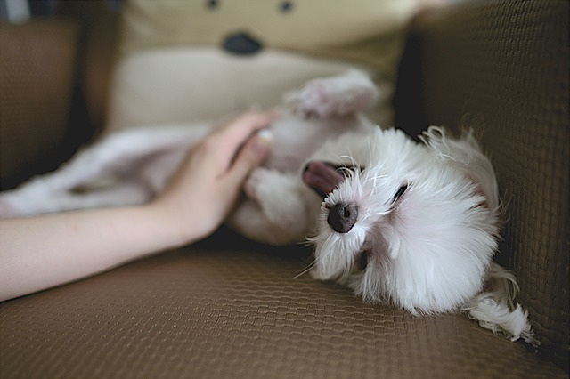

About Us
Canis Ninja, is an application that is dedicated to the dog and the dog lover. Our aim is to provide you with the means to always ensure your beloved pet is well-taken care off irrespective of the hustle and bustle of daily life. It gives the modern generation an opportunity to experience the love and care of having a pet dog while not being able to fully commit to its needs on a consistent basis. We hope to make having a pet easier and more manageable by providing our services to complement the schedule of our customers. Services provided by our application will help customers of any age and requirement to focus on other important things while we take the best care of their pet.
Canis Ninja is a website offering a plethora of services that cater to the need of every dog owner. The range of services is offered by expert dog handlers at an affordable price. Services include walking the dog, playing with the dog, regular vet check up and boarding facility. The website provides an easy interface to book services at your convenience. Our Ninjas (trained dog handlers) will be at your doorstep after booking an appointment via the website or mobile interface. The Canis Ninja even has a state-of-the-art facility to board your dog for a minimal fee when you are away on that important vacation or business trip. Canis Ninja will make your dog feel at home!
Dog Walking
Awesome dong walking service blahhhhhhhhhhhhhhhhhhhhhh bhajjajjjjjjjjjjjj
Dog Playing

Awesome dong walking service blahhhhhhhhhhhhhhhhhhhhhh bhajjajjjjjjjjjjjj
Dog Vet
Awesome dong walking service blahhhhhhhhhhhhhhhhhhhhhh bhajjajjjjjjjjjjjj